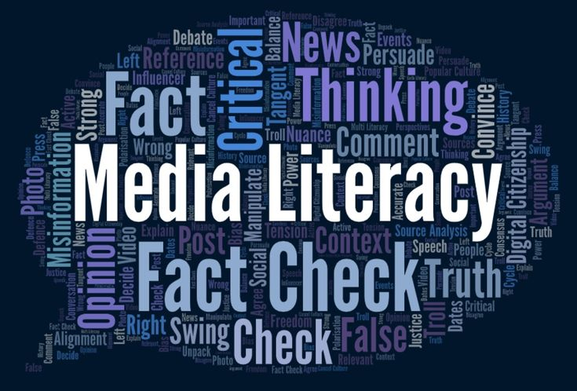

Media literacy is a broadened understanding of literacy that encompasses the ability to access, analyze, evaluate, and create media in various forms.
It involves reflecting critically and acting ethically to engage with the world and drive positive change. It applies to all types of media—from traditional outlets like newspapers to digital platforms such as social media and streaming services.

Literacy in the Digital Age
As information spreads rapidly without verification, media literacy complements digital literacy and digital safety. It involves identifying sponsored content, recognizing stereotypes, and analyzing propaganda.
The Framework for Engagement
The Australian Media Literacy Alliance uses a framework of six key concepts:
- Authorship: Who made the media and why?
- Audience: Who does it target?
- Portrayal: How are people or ideas portrayed?
- Technique: What technologies were used?
- Communication: How are messages communicated?
- Relationships: What relationships are formed?